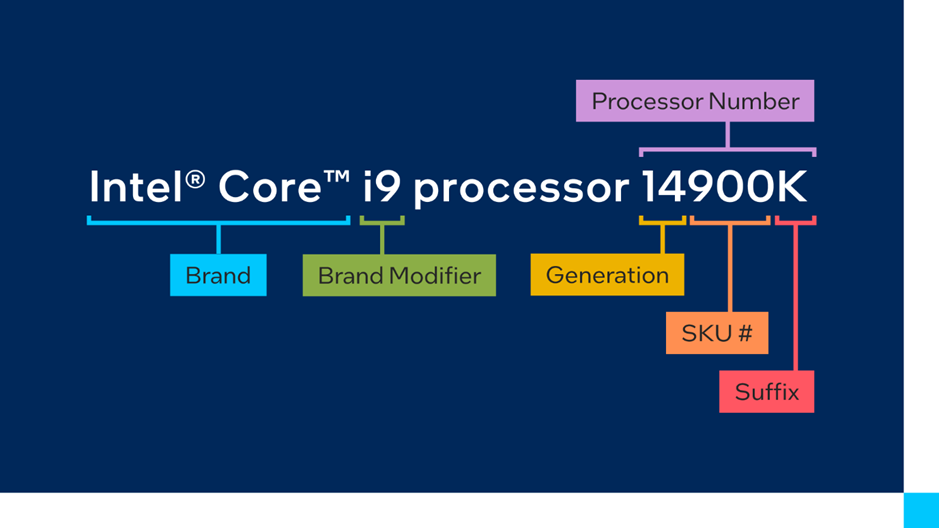

Intel
Společnost Intel je největším výrobcem mikroprocesorů. Hlavní sídlo je v kalifornii. Pro společnost pracuje celkově přes 96 500 zaměstnanců. Intel byl založen Robertem Noycem, Gordonem Moorem, Arthurem Rockem a Maxem Palevskym. Původní název firmy byl Integrated Electronics Corporation.
2.1 Značení Procesorů
Intel značil své procesor dle šablony na obr.1. Značení začíná písmenem „i“. Následuje číslo označující řady procesoru – 3, 5, 7, 9. Procesory i3 jsou nejméně výkonné, kdežto procesory i9 jsou nejvíce výkonné z generace. Po pomlčce 2 čísla označují generaci procesoru. Nejnovější je nyní generace 14. Poté je v názvu SKU, který udává identifikační kód procesoru. Nakonec se píšou modifikační písmena, která ovlivňují vlastnosti procesoru.
- K Overclocking/přetaktování odemčeno
- F bez Integrované grafické karty
- S Speciální edice
- T Optimalizovaná spotřeba
- X/Xe Overclocking odemčen, vysoký výkon
V roce 2023 Intel oznámil, že odebere písmeno „i“ z názvu a procesory 5,7,9 začne vyrábět ve verzi ultra a basic.
2.2 i7-14700K
Tento procesor patří k jednomu z nejlepší aktuálně k dispozici. Disponuje 20 jádry 8 výkonnostními a 12 efektivními (to je o čtyři E-jádra více než generace 13). Maximální frekvence je 5,6 GHz. Podporuje RAM DDR5 až do 5600 MT/s (mega transfery za sekundu). Tento procesor bych zvážil jen v případě, že sestavujete herní počítač a plánujete použít monitor s rozlišením 2k. Tento procesor bych zkombinoval s grafickou kartou Nvidia rtx 4070 ti, nebo 4080.
2.2.1 i7-14700 KF
Procesor s jediným rozdílem stejný jako i7-14700K. Tím rozdílem je integrovaná grafická karta, kterou tento procesor nemá.
2.3 i5-14600K
S celkovými 14 jádry, z nichž 6 je výkonnostních a 8 efektivních, velmi dobrý procesor za dobrou cenu. Frekvence dosahuje až 5,2 GHz. Je vhodný pro většinu herních a pracovních počítačů. Zvládne v podstatě jakoukoliv grafickou kartu a je ideální pro rozlišení 1K.
2.4 i9-14900K
Nejvýkonnější procesor, který společnost Intel aktuálně nabízí je i9-14900K. Obsahuje 24 jader 8 výkonnostních a 16 efektivních. Celkem má 32 vláken s frekvencí až 6 GHz. Ideální pro rozlišení 4K. Společně s grafikou kartou rtx 4090, tvoří kombinaci, kterou nic nepřekoná. Tento procesor není vhodný k běžnému používání. Je to procesor velmi výkonný ale také velmi drahý. Hodí se jen pro úzkou skupiny využití.